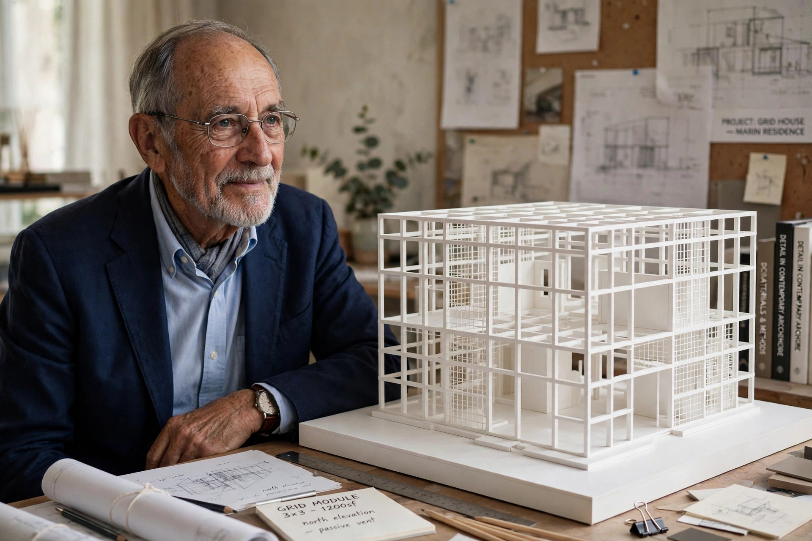

From Wikipedia, the free encyclopedia
| Peter Eisenman | |
 | |
| Born | 11 August 1932, Newark, New Jersey, US |
|---|---|
| Alma mater | Cornell University; Columbia University; University of Cambridge |
| Practice | Eisenman Architects |
| Notable buildings | House VI; Wexner Center for the Arts; Memorial to the Murdered Jews of Europe; City of Culture of Galicia |
Peter Eisenman (born 11 August 1932) is an American architect, writer and academic, regarded as a central figure in architectural deconstructivism and postmodern theory.
Eisenman studied at Cornell and Columbia before completing a doctorate at Cambridge, where he wrote on the Italian rationalist Giuseppe Terragni. In the late 1960s he was grouped with the "New York Five" — alongside Michael Graves, Charles Gwathmey, John Hejduk and Richard Meier — whose white, abstract houses revived the language of early modernism. His own numbered House series (1967–78), culminating in House VI in Cornwall, Connecticut, treated architecture as a conceptual, almost linguistic system of grids, shifts and erosions, deliberately indifferent to conventional domestic comfort.
In 1967 Eisenman founded the Institute for Architecture and Urban Studies in New York, an influential think tank and publisher (of the journal Oppositions). He taught at Princeton, the Cooper Union, Harvard and Yale. His theoretical writing — including Diagram Diaries (1999) and Written into the Void — imports ideas from structural linguistics, Chomsky's transformational grammar and Derrida's deconstruction into architecture. He collaborated with Jacques Derrida himself on a garden project for Parc de la Villette in Paris, alongside Bernard Tschumi's competition-winning scheme.
Large-scale work followed from the 1980s: the Wexner Center for the Arts at Ohio State University (1989), the Greater Columbus Convention Center, the Aronoff Center at the University of Cincinnati, the Memorial to the Murdered Jews of Europe in Berlin (2005) — a field of 2,711 concrete stelae designed with Buro Happold — and the vast, long-delayed City of Culture of Galicia in Santiago de Compostela, Spain.